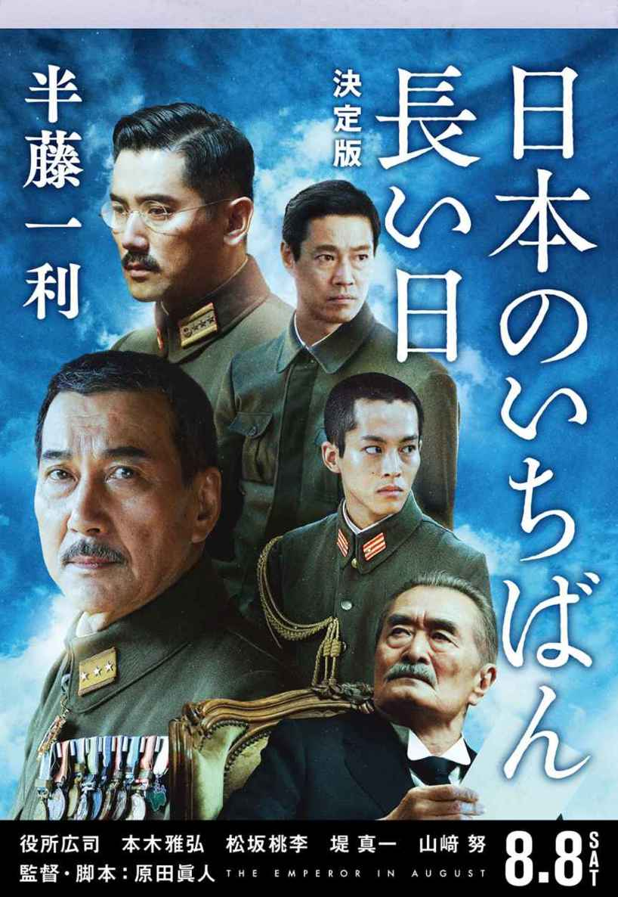

| 「あの戦争」を観る！ 戦争映画大特集 【文春e-Books】 | |
| 半藤一利 & 山崎 努 & 春日太一 & 町山智浩 | |
| (2017) | |
文春e-Books
「あの戦争」を観る！ 戦争映画大特集
陸軍若手将校らによる反乱、玉音放送を命がけで守った宮内庁職員、放送局員の奮闘──〝あの日〟政府中枢で何が起きていたのか？ 日本を破滅の淵から救ったものとはなにか？ 終戦時の内閣総理大臣・鈴木貫太郎を演じた俳優・山﨑努氏と半藤一利氏とが語り合った。
昭和二十年八月十五日。多くの日本人が初めて天皇の肉声を聞いた時、戦争が終わった。あれから七十年──日本がポツダム宣言を受諾し、玉音放送に至るまでの激動の二十四時間を活写した、半藤一利氏のノンフィクション『日本のいちばん長い日』が映画化され、八月八日、全国公開される。
半藤 映画を拝見しました。私は鈴木貫太郎さんが大好きだから、山﨑さんばかり目で追っていましたよ（笑）。
山﨑 ありがとうございます。
半藤 この作品は何度か映像化されていますが、これまでの貫太郎さんというのは、飄々とトボケた老人という感じなんです。ところが今回の山﨑さんの演じる貫太郎さんは違う。強い時はものすごく強く、戦争を続けるか止めるかで混迷する会議を制する力を持っていた。それを見て、やっぱりこれが一番、貫太郎さんの実像に近いんじゃないかな、と思ったんですよ。
山﨑 半藤さんの原作を読ませていただいたとき、貫太郎さんという人は、一見茫洋としているようだけれど、待って待って待ち続ける強さ、そして最後に決めるべき時に一気に行く強さを持っていると感じました。
半藤 元々軍人で、海軍大将まで上りつめた人ですからね。日清・日露の英雄でもある。親族に聞くと、ピシッとした強いところがあって、実に胆の据わった人だったといいます。
山﨑 動じないタフなところに周りはあきれて苦笑する。だから「鈴木」じゃなくて「貫太郎さん」と呼びたくなる（笑）。二・二六事件では銃弾を何発も浴びたけれど、奇跡的に生き延びた。襲撃した将校も軍人としての貫太郎さんに敬意を持っていたから、とどめを刺さずに去ったという。そういうエピソードがたくさんある強い人だったんですねえ。
いい人が最後に残っていた
半藤 戦争を終わらせる過程で、貫太郎さんは二度にわたって天皇に聖断を仰がなければなりませんでした。しかし、判断を仰ぐということは天皇に全責任を負わせかねないわけですから、本当は総理大臣がやるべきことではない、とわかっていた。けれどもそうするしかなかった。やっぱりね、これは相当肝が据わっていないとできませんよ。
山﨑 貫太郎さんが総理になったのは七十八歳になる年。僕は撮影が終わった直後に七十八になったから、ほぼ同い年なんです。
半藤 そうでしたか。当時の七十八歳はいまよりはるかに老人です。あれだけ重責のかかった仕事をしたのは本当にすごい。しかし貫太郎さんは終戦後二年半くらいで亡くなってしまうわけですから、やはりかなりの激務だったんでしょうね。
山﨑 年齢的には近いのですが、なかなかイメージが出来なくて、役づくりには本当に苦労しました。いつもはそんなことはしないんですが、千葉県の関宿にある貫太郎さんのお墓参りに行ったり、記念館に行ったりしました。藁にもすがる気持ちでした。
半藤 そんなに苦労されたんですか。
山﨑 ある時、台本を声に出して読んでいたら、自分の地声よりかなり高い声、のどの奥の方で引っかかるような声を発見したんです。その声で、僕なりの貫太郎さんのイメージができました。ただ、本物の貫太郎さんはあの風貌からして、渋くて低い、ドスのきいた声なんじゃないかなと思っていました。ところが撮影後しばらくして、ＮＨＫの番組で貫太郎さんの肉声が放送されたんです。
半藤 ああ、私も観ました。高い声でしたね。
山﨑 僕の高い声よりさらに高かった（笑）。でも僕の演じた声と、雰囲気が似ているんです。この偶然にはびっくりしました。貫太郎さんは当時、耄碌していると非難されてたようですね。
半藤 ええ。でも本当に、いい人が最後に残ってくれていた。二・二六事件で暗殺されていたら、日本はどうなっていただろうと思います。彼が総理大臣になったのは一九四五年の四月ですが、当時家族に対しては「何があってもここで戦争をやめる。だから俺は殺されちゃいかん」とはっきり言っていたというんです。
戦争は「終える」のが大変
山﨑 最初から。
半藤 自分の時に戦争をやめるという決意を固めて首相を引き受けたのでしょう。ところが彼は五月、六月になっても国民に向けたラジオ放送や議会の演説では、徹底抗戦を訴えています。
山﨑 真意は隠していたんですね。
半藤 はい。結局、終戦までは四カ月かかった。その間に空襲や原爆で沢山の人が死んだ。だから、なぜもっと早く戦争を終わらせなかったのか、と貫太郎さんを批判する人もいますね。
山﨑 うーん、しかしあれ以上終戦を急いだら、軍部が黙っていなかったでしょう。
半藤 ええ。国内の情勢は極めてピリピリとし不安定でした。そして原爆が落とされ、ソ連まで参戦してきた。終戦は、ギリギリのところだったんですよ。映画にもあるように、八月十五日未明に近衛師団の反乱が起こり、一歩間違えばもっと大きな反乱になっていてもおかしくなかった。
山﨑 本当に綱渡りだったんですね。
半藤 戦争というのは、始めるのは簡単です。いかなる戦争も始まる時はパッと始まる。ところが終えるのは、ものすごく大変です。あらゆる戦争がそうですが、中でも先の日本の戦争が一番、終わらせるのは真剣刃渡りだったと思います。
山﨑 半藤さんは、貫太郎さんと昭和天皇は親子のような関係であったと書かれていますね。今回の映画の原田眞人監督も、「年齢的には、この三人は貫太郎さんを家長とする長男（阿南惟幾陸相）と次男（昭和天皇）の家族でもあり、そこに映画の根っこを置いた」と言っています。
半藤 貫太郎さんは侍従長として八年間、昭和天皇のそばにいました。その間の四年間に、阿南さんも侍従武官として一緒だった。その時に、三人に深い信頼関係が生まれていたんでしょう。終戦ギリギリの段階で、阿南さんと貫太郎さんというお互いわかりあえる二人が中枢にいたことは本当に大きかった。
山﨑 巡り合わせを感じますね。
半藤 陸軍は派閥争いがすごかったのですが、阿南さんはその外側にいた人。派閥とは全然関係ない男が最後に残っていたんですね。当時、陸軍の意志に合わないことを政権がすれば、陸軍は大臣を辞任させて後任を出さないことで、内閣を倒せた。だから他の大臣たちは、何かあったら阿南さんは辞表を出すだろうと思い、彼が胸元に手をやるたびに、みんなハッと見ていたといいます。でも出さなかった。本当に辞任するつもりはなかったらしいです。
天皇になりきった本木さん
山﨑 それはやはり、三人の信頼関係が強かったからでしょうか。
半藤 そう思います。映画では役所広司さんが阿南を演じていましたが、毅然としてとてもよかった。
山﨑 演技がモダンなんです。昔の俳優はたっぷり演じて余韻を残す芝居を好みました。でも彼は、自分が意図した表現の半分くらいまで演じたら、パッと次に移ってしまうようなところがある。説明的なことはせずに、とてもテンポがいい。
半藤 なるほど。
山﨑 たとえばすべてが決した後、阿南が貫太郎さんに暇乞いするシーン、あれを昔の俳優がやったら思い入れたっぷりの大芝居で、何倍も時間がかかってしまいます（笑）。
半藤 あはは。今回は実にあっさりしていましたね。
山﨑 役所はだいぶ後輩なんですが、いつも感心して見ています。昭和天皇を演じた本木（雅弘）も素晴らしかったです。
半藤 本木さんは本当に昭和天皇になりきっていた。高貴ですらあった。軍服姿がとても凜々しく、気品があって、繊細な中にも意志の強さを感じました。
山﨑 彼は今回、大変な準備をしてきたと思います。やはり天皇を演じるというのは、相当に覚悟がいりますから。でも、彼はロケ先で衣裳替えしたりする時、いつも隅っこでやるんですよ。ある時なんて、誰かが先に衣裳部屋に入っていて、廊下で着替えていた。こそこそ恥ずかしそうに......天皇なのに（笑）。だから、「本木、お前が一番偉いんだから、遠慮せずに中へ入って着替えろ」と言ったんです。そしたら中で役所が着替えてた（笑）。
半藤 あっはっは。それにしても、東京は様変わりしてもう当時の風景は残っておらず、撮影できる場所がありません。どこで撮るのかと思っていたら、何と、関西で全部撮影したとか。
山﨑 はい。神戸大学や武庫川女子大などで撮影しました。あの辺りにはまだまだ古い建物が残っています。
半藤 そうなんですか。七十年前を知っている日本人は少なくなってきていると思いますが、私はほとんど違和感を感じませんでした。
山﨑 終戦の時、半藤さんは何歳でしたか？
半藤 十五歳です。三月十日の東京大空襲に遭って、城に疎開しました。そこで米軍機の機銃掃射を受けて......。
山﨑 え、狙われたんですか!?
半藤 ええ、警報は出ていましたが慣れっこになっていたんですなあ。川で鰻を獲っていたんです。するとブーンとやってきて、逃げようと思った時に、身体から数十センチ離れたところにダダダッと撃たれて、腰が抜けて引っくり返りました。おっかなかったですね。
山﨑 玉音放送は聞かれましたか。
半藤 ええ。この時は新潟県の長岡にいて、そこで軍需工場に動員されて働いていました。あの日、ラジオから正午を知らせる音が鳴ると、いきなり、「ただいまより重大なる放送があります。ご起立を願います」というＮＨＫの和田信賢放送員の声が聞こえて、放送が始まったんです。といっても、天皇陛下の終戦の放送だとは周囲の誰も思っていなかったはずです。
山﨑 半藤さんも？
半藤 はい。いよいよ本土決戦だから、最後までがんばれ、という叱咤激励だと思っていました。でも聞いていると、負けたことがすぐわかりました。「堪え難きを堪え忍び難きを忍び」「万世の為に太平を開かんと欲す」という言葉は聞こえましたし、ポツダム宣言という言葉はありませんでしたが、これを「受諾する旨通告せしめたり」という言葉も聞こえましたから。それで、日本は負けたのか、これからは俺の人生はたいしたもんじゃないな、好きなことをやろうじゃないか、ということで、同級生たちと防空壕に入って、生まれて初めて煙草を吸いました。
山﨑 まず煙草を思いついた（笑）。
半藤 はい。吸い終わってから、「次は女だ」というやつがいて、「女なんて、簡単にいるか」と言ったら、「いるじゃないか、勤労動員の女学生が」と。ばかじゃないかと思いましたよ（笑）。
危機のときの〝日本人らしさ〟
山﨑 しかし、世界ががらりと崩れてしまったときに考えるのは、案外そんなことなのかもしれないですね。
半藤 山﨑さんは終戦の時は、どちらに？
山﨑 僕は八歳で、空襲の頃は千葉の松戸にいました。わが家では警戒警報が鳴ったら、ゲートルを巻いて防空壕に入るという決まりになっていたんです。ゲートルって慣れないと巻くのが難しくて、夜中だと寝ぼけてるし、子供だし、うまくできないんです。そうこうしているうちに警報解除になっちゃうという（笑）。
半藤 ゲートルはちゃんと折らないとずれますよね。
山﨑 三段目をこう折らないと（とやってみせる）。
半藤 そうそう（笑）。
山﨑 その後、柏の山の中に疎開しました。そこへ、千島の方に出征していた父が帰って来ました。復員してきた親父は、途中の知り合いの家にまず立ち寄ったんです。そこから使いの者が村の奥の我が家まで来て、お前のおやじが帰って来たぞと知らせてくれた。それを聞いた八歳児は、ほんとは特別嬉しくもなかったんですが──実感がなくて──でもこれは、嬉しがって見せなきゃいけない場面だと思ったんですね。それで、山道を裸足で駆け下りていった。
半藤 そのころから演技されていた？
山﨑 そうなんです。演技をしているという意識がありました。そして、おやじがいる家に着いてドアをダーンと開けた。上がり框にいたおやじが静かに顔を上げて、僕を見た。感激の対面です。
半藤 ほうほう、そして。
山﨑 ......でも僕の演技プランはそこまでで、そのあとがなかった。瞬時の沈黙の後、おやじがスッと目を逸らした。しまったこれは見抜かれたと思った（笑）。苦い思い出です。
半藤 山﨑さんの初めての演技だったんですね。
山﨑 今回、貫太郎役の準備のため、『日本のいちばん長い日』を何度も読み返しました。ここには大勢の人物が登場しますが、僕は一人の人間を見ているような気がしました。少し変な言い方になりますが、それぞれの人物の要素が自分の中にはあるような気がしましたし、若い反乱将校、貫太郎さん、阿南の心境、全部、一人の人間の中にあってもおかしくないんじゃないかと。
半藤 分かります。どの人物も、日本人の典型だからでしょう。ああいう危機の時に、日本人らしさというのがいちばん出るんですよ。たぶんどなたにも、これは俺だと思い当たる部分があるんじゃないでしょうか。
山﨑 なるほど。誰もが必死で思い込んだり迷ったりしていたんですね。そしていろいろな幸運と偶然が重なって、何とか戦争を終わらせることができた。
半藤 はい。日本人は危機にした時どう動くのか？ なぜあの国難を乗り越えられたのか？ そのあたりが垣間見えるところに、こうして戦後七十年目に映画化された意味もあるのではないでしょうか。
やまざきつとむ／１９３６年、千葉県生まれ。63年、黒澤明監督の映画『天国と地獄』の誘拐犯役で注目を集め、以降、幅広いジャンルで活躍。著作に『俳優のノート』『柔らかな犀の角』（ともに文春文庫）。
はんどうかずとし／１９３０年、東京生まれ。東京大学文学部卒。文藝春秋在籍中に『日本のいちばん長い日』を著す。主な著作に『聖断』『ノモンハンの夏』『昭和史』全２巻、『幕末史』ほか多数ある。
初めて戦場を舞台にした映画が公開されるのは敗戦から約五年後、一九五〇年一月のこと。谷口千吉監督『暁の脱走』だ。
舞台は終戦間近の北支戦線。生真面目を絵に描いたような兵士・三上（池部良）は慰問に訪れた歌手・春美（山口淑子）と恋仲になるが、それを横恋慕した上官（小沢栄太郎）の策略により、軍法会議に処せられることに。軍や上官の良心を信じ続けた三上だったが、上官の本性を知り春美と脱走を図る。だが、そんな二人の背中に、上官からの容赦ない機銃掃射が浴びせられる──。
たとえどんな理不尽なものであろうと上官の命令は絶対であり、それに逆らおうとする者は容赦なく無残な目に遭う。そんな軍部の非人間性を告発する社会派作品が、以降の戦争映画の一つの柱になっていく。
その代表作といえるのが、五二年の『真空地帯』（山本夫監督）だ。舞台となる駐屯地では、古年兵による初年兵への暴力や上層部による物資横流しが横行している。主人公の木谷一等兵（木村功）はそうしたあり方に疑問を抱くが、そのために上層部に目をつけられ、相次ぐ嫌がらせを受けた挙句に前線へと飛ばされてしまう。木村の、いかにも弱々しく陰気でナイーブな演技が、木谷の無力さを際立たせていた。
小林正樹監督が五九年から六一年にかけて毎年二部ずつ計六部、総上映時間九時間三十分の超大作として製作した『人間の條件』の主人公・梶（仲代達矢）もまた、たえず理不尽と戦い続け、そして敗れ続けた。第一、二部では満州の鉱山で労務管理の立場にあり、中国人捕虜の労働環境改善に努めたために軍部と対立、召集されて最前線へ送られてしまう。第三部では新入りイジメを仕掛ける古参兵たちと対立、シベリア抑留された第六部ではソ連兵やそれに媚びる旧士官と対立......、戦えば戦うほどに自らの置かれる状況が悪くなっていく梶の姿からは、巨大な理不尽に対する作り手の怒りが伝わってくる。
こうした社会派作品と並んで五〇年代の戦争映画で大きな柱となったのが、戦場で命を散らした若者たちの悲劇を描いた作品で、戦没学生たちの手記が原作の五〇年『日本戦歿学生の手記 きけ、わだつみの声』（関川秀雄監督）から始まる。
本作では終戦間近のビルマを舞台に、戦う作戦もなく、投降することも許されない、絶望的な前線の様子が描かれている。基地を撤退することになり、歩けない傷病人たちは置き去りにされる。一人、また一人と若者たちは自ら命を絶っていった。一方、進軍を続ける若者たちもまた、悲惨だった。熱の太陽と凄まじい降雨が繰り返される天候の下、猛烈な砲撃を浴びてただ逃げるしかない。彼らは傷つき、身動きもできずに、阿鼻叫喚の下で無惨に死んでいく。「戦争なんて、誰が始めたんだ！ ちくしょう！」その叫び声もまた、砲撃と硝煙の中にかき消されていった。
『わだつみ』のヒットを受けて製作されたのが五三年の今井正監督『ひめゆりの塔』だ。本作では、沖縄戦の悲劇の象徴ともいえる看護女学生「ひめゆり学徒隊」が全滅していく様が描かれている。
だが、彼女たちの死が劇的に強調されることは、全くない。乾いたタッチの中で次々と、米軍の砲撃や掃射の前に倒れていくのみ。彼女たちは厳しい戦局にあっても、決して明るさを失わない。自殺用の青酸カリですら、笑顔でジャンケンしながら分け合う。抒情的な生の描写と、突き放したように唐突な死の描写。この対比が、戦場の無情さを生々しく際立たせることになった。
五三年『雲ながるる果てに』（家城巳代治監督）では、特攻隊で散った若者たちの姿が初めて描かれている。その中の一人、大滝を演じた鶴田浩二は圧巻だった。大滝は自ら特攻を志願し、国家の大義を信じてきた。だが、翌朝に出撃を控えた明け方、湖畔にたたずむと突如として泣きわめき始め、地面を転げ回る。そして両親と恋人の名を呼びながら「会いたい、会いたい......！」と叫び続ける。
本作は鶴田自身による次のナレーションで幕を下ろす。「海軍中尉大滝正男、身長五尺六寸、体重十七貫五百、極めて健康」鶴田特有のビブラートからは、二度と帰ることの許されない飛行に立つ若者への、悲痛な悔恨が感じられた。
自ら魚雷を操作し、そのまま敵艦に体当たりしていく「海中の特攻」ともいえる「人間魚雷回天」に乗り込む若者たちの姿を追った『人間魚雷 回天』（五五年、松林宗恵監督）のラストは次のナレーションで締めくくられる。「回天特別攻撃隊 よし其の名は消え去るとも 謂れなき暴力への抵抗として 永遠に歴史の審判者たれ」
無力な兵たちを通して軍部の理不尽を告発した作品も、命を散らす若者たちを描いた作品も、通底する想いは一つ。それは、こうも無残な結末を迎えることになる戦争を始めることを許し、そして終わらせられなかったことに対する、「生き残った者たち」による強烈な慙愧の念だ。二度と戦争は起こさせない──。自ら戦争を経験し、その傷の癒えていない映画製作者たちだからこその痛切な叫びが、この時期の戦争映画からは聞こえてくる。
六〇年代に入ると、戦争映画の在り方に変化が生じる。それまでの主人公たちは軍部の理不尽に対して成す術はなかった。が、今度はそれに反抗してヒロイックな活躍をみせる男たちが登場してくるようになる。終戦から十五年以上が経ち、日本でも戦争を娯楽映画のテーマとして受け止められる余裕が生まれてきたといえる。そのスタートの作品が、五九年の岡本喜八監督『独立愚連隊』だ。
弟の死の真相を究明するために、軍律や大義なぞクソくらえな集団・通称「独立愚連隊」に潜入した荒木（佐藤允）の活躍が描かれるのだが、とにかく全編が乾いたコミカルなタッチで進み、それだけでも従来の和製戦争映画の常識を覆す作りになっている。しかも、終盤は拳銃を使っての決闘や八路軍との大アクションなど、西部劇のような展開になっていった。その根底には「見捨てられた下士官」から見た軍と戦争への怒りという、岡本ならではの情念が渦巻いているのだが、決してそれは前景化されることはない。戦争という状況をエンターテイメントの題材に取り込んだ、革命的な作品といえる。
ここから一気に、娯楽映画の中に「戦争」が雪崩れ込んでくる。その代表作が、勝新太郎による人気シリーズ「兵隊やくざ」（六五年～）だ。腕っ節自慢の暴れん坊・大宮（勝）と、彼を助けるインテリの切れ者・有田（田村高）のコンビが上等兵や上層部の理不尽に対して暴れ放題に暴れる痛快なシリーズは人気を博し、彼らは反抗と脱走を繰り返しながら、終戦まで北支戦線を賑やかに駆け抜けていった。
一方、六六年の『ゼロ・ファイター 大空戦』（森谷司郎監督）は「理不尽と戦う」という要素も排し、戦闘そのものを一つのアクションとして捉える純然たる娯楽作品となった。
加山雄三扮する主人公は、いつも冷静で的確な判断を下しながら颯爽とゼロ戦に乗り込む。そして、最新の対空砲で防備された米軍レーダー基地爆撃などの三度にわたる作戦をいずれも成功させた。加山のクールでヒロイックな演技と、円谷英二によるミニチュア特撮を駆使した航空アクション、そして邦画には珍しく誰一人として悪人のいない帝国軍人......、スカッと楽しめる任務遂行劇である。
六〇年代後半から日本映画界は斜陽期になり、それに対抗するように各社は総力を挙げた大作映画を製作していく。その題材として、先の戦争も多く取り上げられた。代表的なのは六七年の『日本のいちばん長い日』（岡本喜八監督）に始まる、東宝「８・15シリーズ」だろう。いずれもオールスター大作として製作されているが、特に太平洋戦争を題材にした作品はいずれも娯楽性以上にテーマ性を重視した内容になっている。共通するのは、巨視性をもって先の戦争への批判を行っている点だ。
たとえば『日本の～』はポツダム宣言受諾までの鈴木貫太郎内閣の閣議を追う一方で、クーデターを図る青年将校たちや最後の特攻に向かう若者たちの姿も同等に描いている。また、六八年『連合艦隊司令長官 山本五十六』（丸山誠治監督）では山本（三船敏郎）を核としながらも、ガダルカナルの凄惨な死闘の様子も初めて映像化された。七〇年の『激動の昭和史 軍閥』（堀川弘通監督）は東條英機（小林桂樹）と彼を批判する新聞記者（加山雄三）の対立が企画の発端ではあったが、サイパン島での凄惨な玉砕や、戦争開始に対して無力だった記者に喰ってかかる特攻隊員（黒沢年男）の情念まで重層的に描かれ、むしろメインの二人の影が薄くなっていた。そして七一年『激動の昭和史 沖縄決戦』（岡本喜八監督）は、沖縄本島における米軍との壮絶な戦闘を、軍司令部から下士官、ひめゆり学徒隊に庶民まで登場させながら描き、現時点では唯一の、沖縄戦の全体像を捉えた映画となった。
巨視性という点でさらに大掛かりなものになっているのが、日活が七〇年から七三年に全三部（総上映時間・計九時間）かけて製作した『戦争と人間』（山本夫監督）だ。本作は満州事変からノモンハン事件までの満州を舞台にした群像劇で、財閥・軍部・左翼勢力・一般大衆・植民地民、それぞれの視点を織り交ぜながら、戦争へとひた走る社会の動きが重層的に映し出される。特に第二部からは、物語の主軸となる伍代財閥の若者たちそれぞれの悲恋までもが加わってきて、戦争に翻弄される人々の悲劇が劇的な強調の中で描かれていくことになった。
これからの戦争映画とは
一方、東映の『あゝ決戦航空隊』（七四年、山下耕作監督）は、超大作でありながら個人に焦点が絞られた、珍しい作品だ。主人公は「特攻隊の生みの親」と言われる大西瀧治郎。演じるのは日本で最初に特攻隊員を演じた一人でもある鶴田浩二なだけに、凄まじい情念をほとばしらせている。特に終盤、「負けるということはですよ、天皇陛下御自ら戦場にお立ちになって、閣僚も幕僚も全員米軍に体当たりして倒れて、初めて負けたと言えるのではないでしょうか」と徹底抗戦を唱える場面や、腹を切りながらも息絶えることなく、血の海でのたうち回りながら何度も自らを刺す自決の場面は、一つの役柄を超えて、特攻という非合理な作戦で命を失わせてしまった若者たちへの責を自ら罰しているように映った。
八一年の『連合艦隊』（松林宗恵監督）に始まり現代に至るまで、戦争映画の多くは「甘いデコレーションによるお涙頂戴」へと舵を切ることになる（その雛型となったのは前年公開で日露戦争をテーマにした『二百三高地』だ）。その要素は二つある。「若い兵士たちの家族や恋愛模様をドラマの主軸にする」そして「流行歌手の主題歌によりクライマックスやエンディングを盛り上げる」。これは、戦場の悲惨さそのものではなく、外側に様々な要素を加えて悲劇性を高めようという作りである。これに、九〇年代に始まる「現代人が戦時中にタイムスリップする」もしくは「元兵士やその子孫が過去を振り返る」、つまり「現代人から見た戦場」という視点が加わった。『男たちの大和／ＹＡＭＡＴＯ』や『永遠の０』を観れば分かるように、この三要素が近年の戦争映画の基本パターンといえる。
これはすなわち、今の邦画では戦争が「感動」を生み出すための装置に過ぎないことを意味するのと同時に、こうした外付けの工夫を施さなければ現代の観客に共感してもらえないだろうという恐れを製作者側が抱いているということだ。今の日本は生々しい戦争映画を作れる状況ではなくなっている。それは、それだけ平和な時代が続いたからに他ならない。ならば、今後も戦争映画はヌルくて全く構わない。
文・春日太一
かすがたいち １９７７年東京都生まれ。映画史・時代劇研究家。主著に『あかんやつら 東映京都撮影所血風録』（文藝春秋）、『役者は一日にしてならず』（小学館）などがある。
現在公開中の映画『進撃の巨人』の脚本作りに誘われたのは三年前だ。人間を食らう の巨人たちに絶望的な戦いを挑む若き兵士たちを描いたベストセラー漫画の映画化だが、それを生身の俳優の映画にする際、イメージの助けになったのは、過去に観てきた様々な戦争映画だった。圧倒的に勝ち目のない戦いに青春を燃やし尽くす若者たち、殺し合いの中で人間の尊厳を捨てない人々。ここでは、そんな映画十本を集めてみた。
の巨人たちに絶望的な戦いを挑む若き兵士たちを描いたベストセラー漫画の映画化だが、それを生身の俳優の映画にする際、イメージの助けになったのは、過去に観てきた様々な戦争映画だった。圧倒的に勝ち目のない戦いに青春を燃やし尽くす若者たち、殺し合いの中で人間の尊厳を捨てない人々。ここでは、そんな映画十本を集めてみた。
『暁の７人』75年
一九四一年十二月、ナチスに支配されたチェコに、英国に脱出した亡命チェコ人三名がパラシュートで潜入した。彼らを加えた七人の若者の使命は、ユダヤ人虐殺の決定者であり、祖国チェコを支配するナチ高官、ラインハルト・ハイドリッヒの暗殺。だが具体的な暗殺方法も事後の脱出プランもない決死隊だった。
「自分の命を惜しんだら何もできない！」四二年五月、主人公たちは捨て身でハイドリッヒを仕留めるが、地獄はそこから始まる。
ナチは報復として人口五百人の村リディツェの住民を皆殺しにし、レジスタンスと思しきチェコ市民百五十人を捕えて殺した。主人公たちが隠れた教会にもナチ親衛隊七百五十人が突入するが、七人は六時間も鬼神のごとく応戦し、文字通り、死体の山が築かれる！
レジスタンスの少女が「平和になったら、真っ赤なドレスを着てダンスしてみたいわ」と、暗い墓場で音楽もなく踊るシーンが切ない。
『眼下の敵』57年
大西洋で、アメリカから英国に向かう輸送船を沈めていたドイツ軍の潜水艦Ｕボートと、それを狩る米軍の駆逐艦の知力を尽くした死闘を描く。
駆逐艦はソナー（音波探信器）でＵボートを探す。ＵボートはＢＯＬＤ（気泡発生弾）でソナーを攪乱し、海底に張りつき、エンジンを切って「消える」。駆逐艦はハイドロフォン（水中聴音器）で、Ｕボートの乗組員が立てる音をキャッチしようとする。
Ｕボートの船体は水圧で押しつぶされそうになり、ネジが飛ぶが、決して声は出せない。乗組員は発狂寸前。その時、艦長は「デッサウ行進曲」を高らかに合唱させる。『バルジ大作戦』の「パンツァー・リート」合唱と並ぶ名シーンだ。
たいていのアメリカ製戦争映画ではドイツ兵は鬼畜扱いだが、『眼下の敵』に悪人はいない。Ｕボートの艦長はヒットラーの「我が闘争」に眉をしかめ、「これは悪い戦争だ」と言う。演じるクルト・ユルゲンス自身、ナチ嫌いだったドイツ人だ。
正々堂々の決闘の後、両者は互いを助け、讃えあう。このノーサイド精神！ こんなに後味のいい戦争映画は、他には岡本喜八監督の『独立愚連隊西へ』ぐらいか。
『炎６２８』85年
ナチのアインザッツグルッペ（移動虐殺部隊）に故郷を奪われた脚本家の体験を描いたベラルーシ映画（当時はソ連の一部）。ホロコースト提唱者ハイドリッヒが考案した移動虐殺部隊は、劣等民族を収容所に運ぶのは非効率だと、ユダヤ人やスラブ人の村や町を襲い、その場で住民を皆殺しにする。いわばホロコーストの出前だ。独ソ戦だけで百万人が殺された。タイトルの「６２８」とは、焼き尽くされたベラルーシの農村の数。
一九四三年、十四歳の少年が村に帰ると誰もいない。異臭が漂い、無数のハエが飛び交う。家の裏に回ると、裸の死体が積み上げられている。虐殺部隊だ！ 村人は教会に押し込まれ、手榴弾と火炎放射器で皆殺しにされる。ボッシュの地獄絵図を見ているようだ。
虐殺を生き延びた主人公の少年の顔は老人に変わっている。
『丘』65年
『フルメタル・ジャケット』『戦争と人間』『地上より永遠に』など兵営内のシゴキやイジメを描いた映画は多い。『十二人の怒れる男』の巨匠シドニー・ルメット監督の『丘』は、第二次大戦中、リビアの灼熱の砂漠に築かれた英陸軍刑務所の実態を暴く。
飲酒、軍規違反、逃亡、上官に反抗した兵士が送られ、矯正される。兵営中央には石を積み上げて土を盛った人工の丘があり、受刑者はこの丘をフル装備で登り降りさせられる。シジフォスの労働より無意味な刑罰で、自尊心を砕き、権威に服従させるのが目的だ。
勇敢な兵士ロバーツ（ショーン・コネリー）は玉砕確実の突撃命令を拒否し、上官を殴って収監される。堂々たるロバーツにコンプレックスを感じた曹長は、彼を執拗に虐待するが、屈服させられないので、腹いせで別の大人しい兵士に何度も丘を登らせ、ついには死なせてしまう。国を守るべき兵士を味方が殺していいのか。
『丘』の後、陸軍刑務所は改善された。コネリーはこれで演技に目覚め、００７をやめることになる。
『ビーチレッド戦記』67年
クリント・イーストウッドは『父親たちの星条旗』と『硫黄島からの手紙』の二本で硫黄島攻略戦を日米両方の視点から描いたが、同じことを四十年も前にやったのがコーネル・ワイルド監督の『ビーチレッド戦記』だ。ワイルドはイーストウッドと同じくアクション俳優出身でハリウッドから離れて映画を撮り続けた映画作家。
日本軍が守るフィリピンの島に米海兵隊が上陸する冒頭は、当時としては珍しく、腕がもげ、脚がちぎれる血みどろ描写で、『プライベート・ライアン』にも先駆けている。「我々の目的はただひとつ。人殺しだ」という上官のセリフも強烈。
米兵側だけでなく日本兵も、銃後で待つ我が子の笑顔を、妻の裸体を想う。日本の生活描写にも間違いがない。そんな普通の庶民同士が銃剣で刺し合う地獄。日米の少年兵同士が撃ち合って、両者、死の状態で倒れているうちに目と目だけで心が通じ合う。日本の少年がポケットから取り出したタバコをアメリカの少年に投げ与えようとするが......。
『戦争のはらわた』77年
『ワイルドバンチ』などの西部劇でスローモーションでの血飛沫描写で一世を風靡したサム・ペキンパー監督による西独・英合作映画。
『プライベート・ライアン』が登場するまで、ミリタリー・オタクからは「史上最も考証の正確な戦争映画」として崇拝されていた。
東部戦線のクリミア半島。ソ連軍と対峙するドイツ軍側に貴族出身のシュトランスキー大尉が着任する。武功を上げて鉄十字勲章が欲しいが、実戦経験がない彼は、鉄十字章を持つ勇士シュタイナー伍長（ジェームズ・コバーン）に嫉妬する。
ある朝、シュタイナーの小隊は自分たち以外の友軍がいないことに気づく。シュトランスキーはソ連軍の大攻勢を知って、シュタイナーを残して逃げたのだ。
ソ連のＴ34戦車大襲来シーンはユーゴスラヴィア軍の協力で撮影された。塹壕を飛び越え、コンクリの戦車止めを破壊して迫るＴ34の突進力！
シュタイナーはソ連兵から鹵獲した短機関銃PPSh41、通称バラライカを撃ちまくる。ペキンパーお得意のスローモーションで乱れ飛ぶ空薬莢と血飛沫はまさに「暴力の美学」！
シュタイナーはナチも戦争も大嫌いだが、「戦闘」には血が騒いで止まらない。そんな「男の病」にミリ・オタたちは深く頷くのだ。
『プライベート・ライアン』98年
とにかく冒頭、主人公ミラー（トム・ハンクス）たちがオマハ海岸に上陸するシーンが圧倒的。
一九四四年六月六日、フランスのノルマンディに六千を越える連合軍の艦艇が上陸する。大規模な犠牲者を最初から覚悟した作戦で、ドイツ軍歴戦の勇士が守るオマハ海岸に上陸した連合軍兵士の死傷率は五割に達した。海水は本当に真っ赤に染まり、撮影では四十バレルの血のりが使われた。
スピルバーグは実際に上陸作戦に参加した兵士たちにインタビューを重ねて惨劇を再現した。砲弾に直撃された兵士が四肢を飛び散らせて宙を舞う。腸がはみ出た少年兵が「ママ、ママ」と泣き叫ぶ。カメラはパニックで痙攣する兵士の目になって地面を い、レンズに飛び散った血がしたたる。この容赦ないリアリズムはその後の戦争映画すべてに影響を残した。ドイツ兵が「我々は強制徴用されたチェコ人だ！」と命乞いするのを米兵が射殺してしまうのもリアルでショッキング。
い、レンズに飛び散った血がしたたる。この容赦ないリアリズムはその後の戦争映画すべてに影響を残した。ドイツ兵が「我々は強制徴用されたチェコ人だ！」と命乞いするのを米兵が射殺してしまうのもリアルでショッキング。
クライマックス、ミラー小隊は独軍のタイガー重戦車と武装親衛隊に立ち向かう。20ミリ対空機関砲が人体を粉々にする。タイガーはＴ34の改造だが、それ以外はヨーロッパ中のコレクターが協力して実物の兵器や軍装が多く使われ、小型装甲車ケッテンクラートの片輪走行まで見られる、ミリタリー・オタクにとってはまさに「神映画」である。
『追想』75年
ノルマンディ上陸作戦の四日後、四四年六月十日、南仏オラドゥール・シュル・グラヌ村で、ナチの武装親衛隊（ＳＳ）が村民七百人近くをレジスタンスの疑いで虐殺した。戦後、実行者は裁判にかけられたが誰も刑を受けなかった。これに憤ったロベール・アンリコ監督が作った復讐劇が『追想』だ。
外科医ジュリアン（フィリップ・ノワレ）は、妻（ロミー・シュナイダー）と一人娘を、自分の故郷に避難させるが、一足遅れて彼が着くと、村の教会には死体が山積みになっていた。村には彼が父から継いだ古い城があったが、ＳＳに接収され、娘は射殺され、美しかった妻は暴行され、火炎放射器で焼き殺されていた。
ジュリアンは、城の隠し廊下や隠し部屋を使ってＳＳどもを一人ずつ罠にはめて殺していく。温厚そのもののノワレが、自らの行為におののきながらも、妻子の追想によって復讐の炎を燃やしていくのが悲しい。
『地下水道』56年
四四年八月、ナチス・ドイツに占領されたポーランドの首都ワルシャワの十キロ東にまでソ連軍は迫った。ソ連軍はラジオでワルシャワ市民にナチスに対する蜂起を呼びかけ、五万人が武器を取ってゲリラ戦を開始した。しかし、ソ連軍は助けに来なかった。見捨てられたレジスタンスはナチに殲滅され、市は報復として徹底的に破壊され、二十二万人が死んだ。監督アンジェイ・ワイダをはじめ、蜂起の生存者たちがその体験を描いたのが『地下水道』だ。
レジスタンスは鎮圧軍に追い詰められ、下水道を通って脱出しようとした。糞尿に胸まで浸かって暗闇の中を進む。飢えと渇きと恐怖で発狂する者もいる。やっと見つけた出口にはナチが待ち構えていた。
ドイツの小型無人戦車ゴリアテが珍しい。レジスタンスの女戦士（テレサ・イジェフスカ）が汚水にまみれても美しい。
レジスタンスはこの裏切りを忘れず、後にポーランドを占領したソ連進駐軍にテロを仕掛けた。それを描いたのがワイダの『灰とダイヤモンド』（58年）である。
『橋』59年
敗戦から十四年目にドイツで作られた戦争映画。四五年四月、田舎町の幼なじみの七人の少年は、兵隊になれる十六歳に達していなかったが、連合軍がドイツ国境内に侵攻したと聞いて、国を守る戦いに参加できないのを悔しがる。祖国存亡の危機に、ついに彼らにも召集令状が。軍人の父を尊敬して兵隊を目指す少年、片思いの女性と父の関係を知って傷心のあまり軍に身を投じる少年、臆病者と呼ばれないために兵になる少年、気の弱い親友を守るためについていく少年......。
やっと大人みたいに戦える！ とはしゃぐ少年たちだが軍服はダブダブだ。哀れに思った上官は、七人を、故郷の町の小さな橋の守備隊にする。その橋は戦略上、重要でないからだ。
ところが米軍の戦車隊が接近。七人は橋を守ろうと、死に物狂いで戦う。米軍のシャーマン戦車はトラックを改造した木製だがちゃんと恐怖の存在に見える。パンツァファスト（対戦車擲弾）の後方噴出ガスで大やけどをする描写もリアルだ。
若い命を代償に橋を守り切った後、ドイツ兵が来て言う。「この橋はいらないから爆破する」このラストに、国防の名の下に何もかも失ったドイツ庶民の虚しさと怒りがこめられている。
文・町山智浩
まちやまともひろ １９６２年生まれ。映画評論家。米カリフォルニア州バークレー在住。本誌連載既刊からの選り抜き電子版『アメリカは今日も「炎上」中』が好評発売中。
日本のいちばん長い日 決定版
半藤一利
昭和20年8月6日、広島に原爆投下、そして、ソ連軍の満州侵略と、最早日本の命運は尽きた......。しかるに日本政府は、徹底抗戦を叫ぶ陸軍に引きずられ、先に出されたポツダム宣言に対し判断を決められない。昭和20年8月14日正午から24時間の内に起きた出来事を綿密な取材と証言を基に再現。史上最も長い1日を活写したノンフィクション。

戦後70年記念企画 半藤一利・佐藤優 初対談 あの戦争を知るために今こそ読むべき本はこれだ！
文藝春秋編
「週刊文春」で話題を呼んだ読書企画を完全電子化！ 半藤一利氏と佐藤優氏の初対談も収録。敗戦から70年目の夏がくる。年々戦争体験者が減る一方、世界に硝煙が消えることはない。わが国の周辺にもキナ臭さが漂う今だから、過去に学ぶ意味は高まる。戦火に追われた経験を知り、国家の失敗の本質を探る。明日のために読むべし！ 怒涛の54冊徹底ガイド。
半藤一利×佐藤優 初対談 今こそ読むべき14冊はこれだ！戦争文学
悲惨な体験が書かせた傑作群 浅田次郎
天皇 戦勝にこだわった皇太后 原武史
陸軍 異質な時代の異質な軍事集団 保阪正康
海軍 ＯＢを激怒させた徹底検証 戸 一成
一成
真珠湾攻撃 米英の策略にハマったのか？ 春名幹男
ビルマ戦 「大東亜戦争」の生の記録 古処誠二
戦時下の日常 衣食住、価値観を蝕むもの 中島京子
外交 成功か？ 失敗か？ 戸部良一
慰安婦 事実を見据えるために 秦郁彦
戦争と女性 銃後で遊郭で、翻弄された姿 梯久美子
特攻 生き残った者の苦悩 門田隆将
戦略爆撃 日本から始まった「空爆の時代」 安冨歩
兵士 神から犠牲者へ 一ノ瀬俊也
沖縄戦 極限状況を追体験する 又吉栄喜
あの戦争と日本人
半藤一利
歴史とは、一筋の流である。戦争史の決定版。
日露戦争が変えたものから、特攻隊、戦艦大和、原子爆弾などあの戦争を通して見据える、日本人の本質とは。「昭和史」に続く決定版！
十二月八日と八月十五日
半藤一利編著
開戦と終戦の日。人々は何を考えたのか。太平洋戦争開始の１９４１年12月8日。終戦の玉音放送が流れた１９４５年8月15日。人々は何を考え、何を発言し、何を綴ったか。
柔らかな犀の角
山﨑 努
日本を代表する俳優の名文を味わう。「演じる人」ならではのシニカルかつユーモラスな視点に満ちた書評の数々。週刊文春の好評連載「私の読書日記」6年分を収録。
週刊文春好評連載「言霊ＵＳＡ」電子特別編集版アメリカは今日も「炎上」中
町山智浩
電子オリジナル！ 週刊文春で好評連載中の「言霊ＵＳＡ」をまとめた「教科書に載ってないＵＳＡ語録」「知ってても偉くないＵＳＡ語録」「マリファナも銃もバカもＯＫの国」の三冊を「炎上」「ネット犯罪」「ＳＮＳ」などのジャンルごとに、再編集した特別版。Catfish（ネットで正体を隠して別人になりすましている人）、Troll（インターネット上の〝釣り〟）、Guccifer（グッチファー。謎のハッカー）など、広くて深いアメリカのネット世界を辛口批評と痛烈ギャグでメッタ切り！ 抱腹絶倒のコラム33本を収録。
マリファナも銃もバカもＯＫの国言霊ＵＳＡ２０１５
町山智浩
「ハッパのためにカウボーイとヒッピーが握手する、そんなバカげたことが起るからアメリカという国は面白い」。政治からサブカルまで、アメリカのリアルについて語らせたら右に出るものはいないと言われる町山さん。そんな著者が放つ週刊文春人気シリーズ「言霊ＵＳＡ」の単行本第三弾！ 現地で使われている流行語をもとに、イスラム国からハリウッド女優のヌード写真流出事件まで、アメリカの「今」をメッタ斬り。
知ってても偉くないＵＳＡ語録
町山智浩
「共和党の候補だったロムニーは、20億ドルを注ぎ込んだ大統領選を、たった2つの失言でしくじりました」と町山さん。言葉を制す者はアメリカを制す。本書は、現地で流行っている新語・明言・迷言をリアルタイムレポート。週刊文春連載の単行本化、待望の第二弾。登場する言葉は、レッドネック＝貧乏白人、プライム・エア＝アマゾンの無人ヘリによる宅配、メサイヤ＝米国版キラキラネームなど。
教科書に載ってないＵＳＡ語録
町山智浩
「チナメリカ」「イースト・ウッドする」の意味がわかりますか？ 次々と生まれる新語には、リアルなアメリカの今が満載！ なぜかイスラム教徒扱いをされるオバマから、トンデモ発言でおなじみのペイリン、ギャル語を話すアメリカの女子高生まで、大国の実像がここに。

文春e-Books
「あの戦争」を観る！ 戦争映画大特集
２０１５年８月２０日 発行
著 者 半藤一利、山﨑努、春日太一、町山智浩
発行者 村上和宏
発行所 株式会社文藝春秋
東京都千代田区紀尾井町３─２３
郵便番号 １０２─８００８
電話 ０３─３２６５─１２１１
本作品の全部または一部を、著作権者ならびに株式会社文藝春秋に無断で、複製（コピー）、転載、改ざん、公衆送信（ホームページなどに掲載することを含む）することを禁じます。万一このような行為をすると、著作権法違反で処罰されます。
〈お断り〉
本作品を電子書籍化するにあたり、一部の漢字が簡略体で表示される場合があります。また、ご覧になる機種により、表示の差が認められる場合があります。